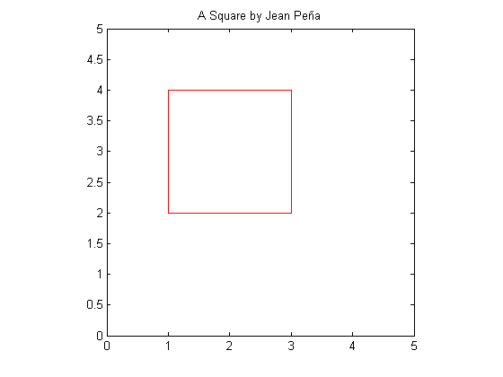
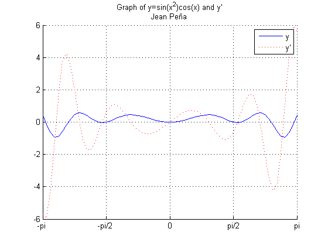
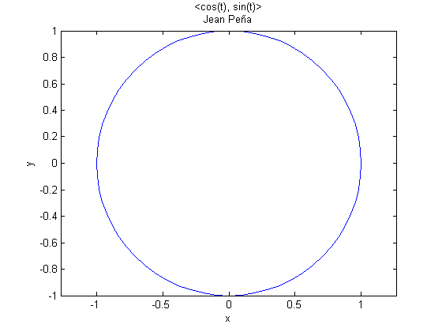

Contents
clc
clf
ex 3.1
fprintf('Exercise 3.1\n')
fprintf('x = linspace(0, pi, 5)')
x = linspace(0, pi, 5)
fprintf('cos(x)')
cos(x)
fprintf('sin(x)')
sin(x)
fprintf('x.*sin(x)')
x.*sin(x)
fprintf('x*sin(x) gives an error')
Exercise 3.1
x = linspace(0, pi, 5)
x =
0 0.7854 1.5708 2.3562 3.1416
cos(x)
ans =
1.0000 0.7071 0.0000 -0.7071 -1.0000
sin(x)
ans =
0 0.7071 1.0000 0.7071 0.0000
x.*sin(x)
ans =
0 0.5554 1.5708 1.6661 0.0000
x*sin(x) gives an errorex 3.2
fprintf('\n\n\nExercise 3.2\n')
fprintf('k = linspace(1,10,10)')
k = linspace(1,10,10)
fprintf('w = 1./(k.^2) ')
w = 1./(k.^2)
Exercise 3.2
k = linspace(1,10,10)
k =
1 2 3 4 5 6 7 8 9 10
w = 1./(k.^2)
w =
Columns 1 through 7
1.0000 0.2500 0.1111 0.0625 0.0400 0.0278 0.0204
Columns 8 through 10
0.0156 0.0123 0.0100
ex 3.3
fprintf('\n\n\nExercise 3.2\n')
1 : 10
1 : .5 : 10
10 : -1 : 1
1 : 1.5 : 9
fprintf('x = 0:pi/4:pi is the same as linespace() in Exercise 3.1')
x = 0:pi/4:pi
fprintf('cos(x)')
cos(x)
fprintf('sin(x)')
sin(x)
fprintf('x.*sin(x)')
x.*sin(x)
fprintf('Again, x*sin(x) gives an error')
Exercise 3.2
ans =
1 2 3 4 5 6 7 8 9 10
ans =
Columns 1 through 7
1.0000 1.5000 2.0000 2.5000 3.0000 3.5000 4.0000
Columns 8 through 14
4.5000 5.0000 5.5000 6.0000 6.5000 7.0000 7.5000
Columns 15 through 19
8.0000 8.5000 9.0000 9.5000 10.0000
ans =
10 9 8 7 6 5 4 3 2 1
ans =
1.0000 2.5000 4.0000 5.5000 7.0000 8.5000
x = 0:pi/4:pi is the same as linespace() in Exercise 3.1
x =
0 0.7854 1.5708 2.3562 3.1416
cos(x)
ans =
1.0000 0.7071 0.0000 -0.7071 -1.0000
sin(x)
ans =
0 0.7071 1.0000 0.7071 0.0000
x.*sin(x)
ans =
0 0.5554 1.5708 1.6661 0.0000
Again, x*sin(x) gives an errorex 3.4
fprintf('\nExercise 3.4\nNot displaying because the instructions said not to. Check the code\n')
Xa=5:5:1000;
Xb=linspace(0,1,11);
Xc=linspace(0,2*pi,20);
Xd=1:1:4;
Xd=Xd.^Xd;
Xe=[1 2 4 5];
Xe=1./Xe;
Exercise 3.4
Not displaying because the instructions said not to. Check the code
ex 3.5
figure(1);
fprintf('\nExercise 3.5\n')
X=[1 3 3 1 1];
Y=[2 2 4 4 2];
plot(X,Y, 'r');
axis equal;
axis([0 5 0 5]);
title(sprintf('A Square by Jean Peña'));
Exercise 3.5

ex 3.6
figure(2);
hold on;
x=-pi:pi/32:pi;
y=sin(x.^2).*cos(x);
dy=2.*x.*cos(x.^2).*cos(x) - sin(x.^2).*sin(x);
g=plot(x,y);
dg=plot(x,dy, 'r');
title(sprintf('Graph of y=sin(x^2)cos(x) and y''\nJean Peña'));
legend('y', 'y''');
set(g, 'LineStyle', '-');
set(dg, 'LineStyle', ':');
axis([-pi pi -6 6]);
grid on;
set(gca, 'XTick', -pi:pi/2:pi);
set(gca, 'XTickLabel', {'-pi'; '-pi/2'; '0'; 'pi/2'; 'pi'})

ex 3.7
figure(3);
t = 0:pi/32:2*pi;
x = cos(t);
y = sin(t);
plot(x,y);
axis equal;
title(sprintf('<cos(t), sin(t)>\nJean Peña'));
xlabel('x');
ylabel('y');
